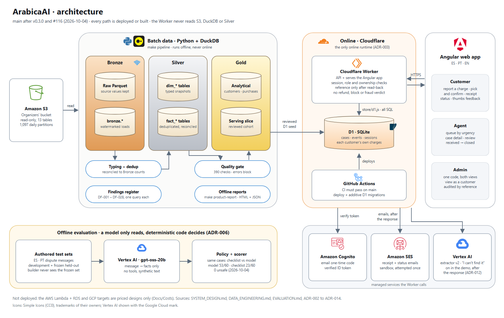
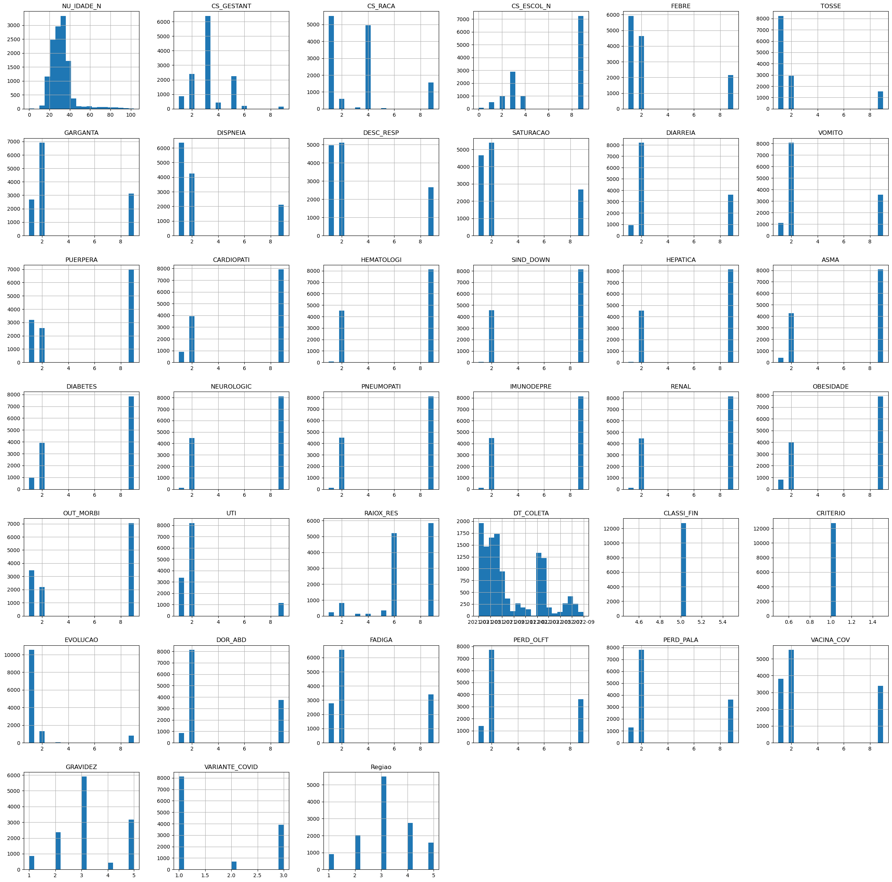
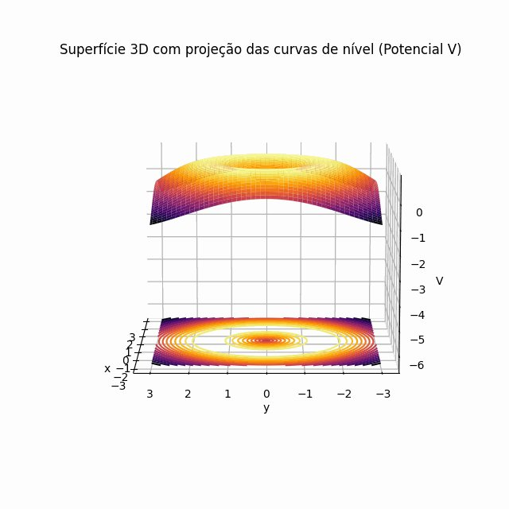
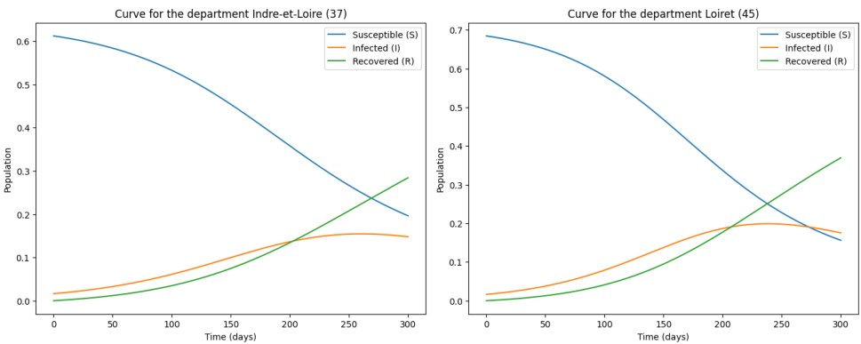
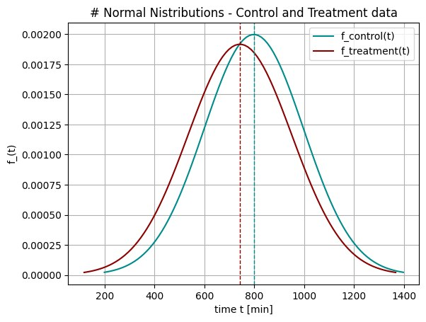
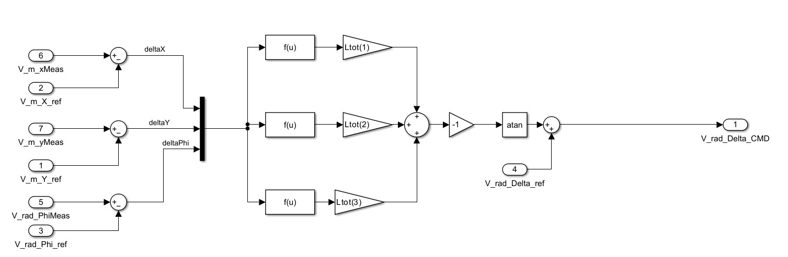
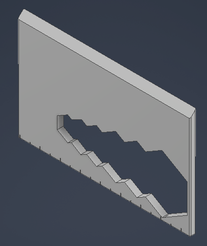
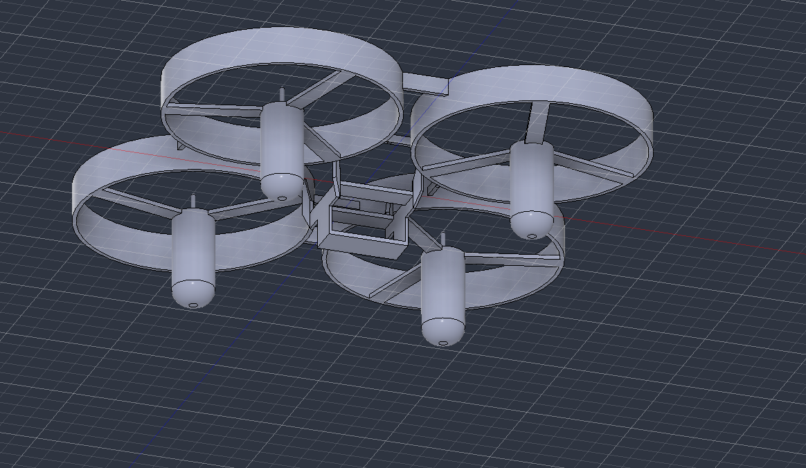
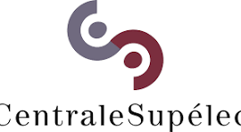

ArabicaAI · Factored Hackathon 2026

Data Scientist and Machine Learning Engineer with hands-on experience building and deploying ML pipelines, automating workflows, and delivering data-driven analysis with cross-industry adaptability to drive measurable business impact.
I hold a double degree from CentraleSupélec (France) and Unicamp (Brazil), where I built my background in AI, optimization, and Industrial Engineering. Currently, I’m a Data Scientist at Avahi, after building and deploying ML and AI platforms as a Machine Learning Engineer at Aprix.
My experience spans diverse industrial contexts, from optimizing labor flexibility at Amazon in Luxembourg to automating hardware fault detection for Motorola at the Eldorado Institute. I also have a background in high-volume data integration and simulation, having worked with FlexSim to automate data imports and evaluate predictive frameworks to accelerate team adoption.
I am fluent in English and French and work primarily with Python, SQL, and AWS, focusing on delivering clear and actionable insights to stakeholders.
Applied AI and machine learning work: deployed systems, hackathon builds and end-to-end data science projects.
ArabicaAI · Factored Hackathon 2026

OpenFinanceAI

Welding-Quality-Prediction

Intent Detection for Travel Chatbots

Radiological-pollution-monitoring-anomaly-detection

Smart Chair Posture Analysis

Optimization and multicriteria decision-making applied to logistics, scheduling and strategy.
MDVRP-Magazine-Luiza

Optimization-AirFrance

Prediction of the SWOT analysis

For the curious: statistics, physics and control problems solved with numerical and computational methods.

SARS-CoV-2 Maternal Impact
Statistical analysis of how the Gamma, Delta and Omicron variants affected maternal outcomes in Brazil, using Python and Power BI.

Numerical Methods in Physics Problems
Physics problems (cylinders, conical pendulum, semi-spherical container, electric field of a charged ring) solved with numerical methods.

Estimating the Covid-19 Reproduction Rate
Project estimating the reproduction rate of Covid-19.

Maintenance Queue Time Analysis
Statistical study of whether a new process reduces the average queue time in an industrial maintenance department.

MATLAB Control Systems & Optimization
Two MATLAB projects on control laws and one on optimization techniques.
Materials selection, product development and engineering studies, built as reproducible, tested repositories.
Carbon Fiber EDC Multitool

Long-Endurance UAV Fuselage

Avahi
Data Scientist - -
Full-time · Remote
Aprix
AI Engineer | Machine Learning Engineer - -
Full-time · Brazil (Remote)
Aprix
AI Engineer - -
Apprenticeship · Brazil (Remote)
Aprix is a SaaS company providing AI-driven pricing solutions for major industries in Latin America. Our technology helps large-scale businesses optimize their pricing strategies and operational efficiency through scalable data products.
Amazon
Data Scientist - -
Internship · Luxembourg (On-site)

CentraleSupélec
Artificial Intelligence Researcher - -
Part-time · France (On-site)
This project is part of a collaboration between the Artefact Research Center and the MICS Laboratory at CentraleSupélec, focused on generative AI, its applications and the development of digital commons. It is aligned with the France 2030 initiative for sovereign generative AI, in collaboration with Mistral, Giskard, INA and BnF.
CNPq - Conselho Nacional de Desenvolvimento Científico e Tecnológico
Machine Learning Researcher - -
Part-time · Limeira, São Paulo, Brazil (On-site)
FlexSim Brasil
Data Scientist - Summer Job - -
Internship · Campinas, São Paulo, Brazil (Hybrid)
FlexSim Brasil is a highly specialized tech consultancy leveraging advanced Digital Twin and 3D simulation platforms to optimize complex, large-scale industrial and logistics operations.
Instituto de Pesquisas Eldorado
Data Scientist - -
Internship · Campinas, São Paulo, Brazil (Remote)
Instituto de Pesquisas Eldorado is one of Latin America's premier R&D institutes (1,600+ engineers), partnering with global tech giants like Motorola to develop cutting-edge software, AI and Industry 4.0 solutions.
Ecole CentraleSupélec, Université Paris-Saclay
Master of Engineering - MEng, Artificial Intelligence - -
State University of Campinas - UNICAMP
Bachelor's degree, Industrial Engineering - -
Radiological-pollution-monitoring-anomaly-detection

Developed an anomaly detection system for radiological pollution monitoring using gamma photon counting sensors. Applied unsupervised learning methods, including LSTM models, to detect anomalies in time series data
Welding-Quality-Prediction
MDVRP-Magazine-Luiza
Optimization-AirFrance
Prediction of the SWOT analysis
OpenFinanceAI
Open-source multimodal AI project for financial analysis and responsible investment recommendations. The system combines visual retrieval over financial documents with vision-language generation and a Streamlit interface for interactive question-answering.
Evaluation includes retriever and generator benchmarks (ROUGE, BERTScore, numerical accuracy, faithfulness, and Borda ranking), plus FinQA testing where Qwen2.5-VL reached 28% accuracy.
Dataset · Report · Demo video
Intent Detection for Travel Chatbots
NLP project for intent classification in a travel assistant chatbot, covering intents such as translation, travel alerts, flight status, lost luggage, and booking support, including out-of-scope request detection.
Built and compared traditional ML baselines (TF-IDF + Logistic Regression, SVM, Random Forest, etc.) and a CamemBERT-based classifier, with evaluation via classification report and confusion matrix.
Smart Chair Posture Analysis
AI project for posture recognition using pressure-mat sensor data. The pipeline processes controlled and continuous recordings from multiple subjects across 7 posture classes.
Developed a domain-adaptation workflow with Wasserstein barycenters and dictionary learning to transfer knowledge from labeled source subjects to a target subject, plus classifier benchmarking on target data.
ArabicaAI · Factored Hackathon 2026
AI-assisted bank support for unrecognized card charges, in Spanish, Portuguese and English. Customers report a charge they don't recognize, confirm their own transaction when possible, and receive a saved reference for human review, with a verified report handed to a human agent. The service does not decide fraud, refund money or block cards.
Built end to end on the supplied (synthetic) LATAM banking data: a Python and DuckDB medallion pipeline (Bronze, Silver, quality gate, Gold) on AWS, a Cloudflare Worker with D1 as the single runtime, an Angular client, Amazon Cognito email-code sign-in and SES notifications, plus an evaluation framework with a frozen held-out set, a checklist baseline and documented ADRs.
Carbon Fiber EDC Multitool
Reproducible product-development study for a compact carbon-fibre card multitool in the CR80 format, for everyday carry and urban cycling. It covers market and competitors, concept design (CAD drawing and 3D model), a 14-week project plan, economic viability and end-of-life planning.
Concept alternative B scored 4.60 against 3.30 and 3.35 in the weighted decision matrix; the economic model puts break-even at 501 cards. Source data, code, tests and generated outputs are kept separate so each result can be traced and reproduced, with CI and an English report (PDF).
Long-Endurance UAV Fuselage
Material selection and manufacturing design for a long-endurance UAV fuselage, developed for the Materials Selection for Engineering course at UNICAMP. The study derives Ashby merit indices, screens candidates with Ansys Granta, applies environmental filters and manufacturing constraints, and closes with a weighted decision matrix and a project plan.
All numbers in the report are generated by the code in the repository from a materials database, so updating the data updates the results. An English technical report (PDF) and CI are included.